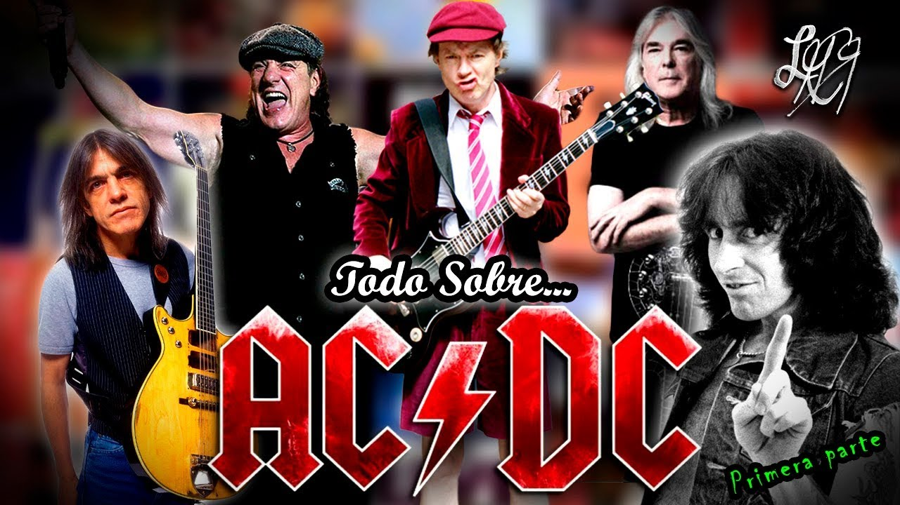

A finales de mes, el 27 de julio, se cumplirán cuatro décadas del lanzamiento de uno de los discos más importantes de la historia del rock. Highway to Hell, el álbum más célebre de AC/CD ya es un clásico y el grupo y la discográfica ya está desarrollando todo un plan para celebrar esta importante efeméride.
Para empezar, la banda ha vuelto a la actividad en las redes sociales, donde no habían realizado ningún movimiento desde el 18 de noviembre de 2017, cuando anunciaron la muerte de Malcolm Young. Además de la posibilidad de reservar merchandising oficial con esta efeméride, han cambiado las fotos de perfil por una que conmemora los 40 años del que fue el último disco de estudio de Bon Scott junto al mensaje ¡Celébralo con nosotros durante todo el mes!
Sin embargo, lo más destacado es que van a ir publicando vídeos de archivo en su canal oficial de Youtube. El primero de ellos, como no podía ser de otra manera, es la actuación de Highway to Hell en el programa de televisión holandés Countdown. A lo largo del mes seguirán subiendo contenidos a este canal. A pesar de que estos vídeos ya se publicaron en un pack de DVDs, es la primera vez que pueden verse online.
fuente:los40.com
https://los40.com/los40/2019/07/18/los40classic/1563434194_881489.html
group

Lo mas actual: Tomorroland
Tomorrowland es el festival de música dance más grande del mundo, con un cartel de nivel superior que reúne a DJs de todo el ámbito de la música dance en la ciudad belga de Boom cada verano. O lo que es lo mismo, si lo tuyo es el EDM, house, techno, hardstyle o todo lo anterior, estarás rodeado de lo mejor de lo mejor.
A eso súmale un impresionante diseño de escenarios, una magnífica producción y grandes sorpresas y verás por qué las entradas para Tomorrowland se agotan en tiempo récord cada año. Se le considera la meca de los fans de la música dance, y adentrarse en este mundo mágico y mitológico debe estar en lo más alto de la lista de imprescindibles de cualquier amante de la música.
La temática de este año es The Book of Wisdom The Return, que resucita la temática de 2012 y favorita de los fans para celebrar el 15.º aniversario del festival.
Tienes toda la información sobre la puesta a la venta de las entradas, el cartel y mucho más en la página de Preguntas frecuentes de Tomorrowland 2019.
fuente: https://www.festicket.com/es/festivals/tomorrowland/2019/